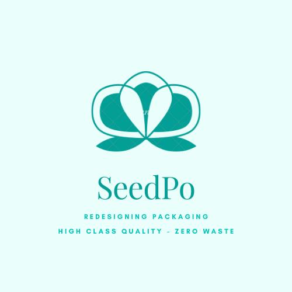

I studied a bachelors' degree in Journalism in Madrid and I'm a master's graduate in Digital Media Design at Birkbeck College, University of London. I love photography, bringing new ideas and to collaborate with others. In early 2021 I presented three business ideas to the Mayor of London Entrepreneur Competition where I made it to the semi-finals with two of them: the initial idea of an accessible mobile app/game for teenagers that aims to bring more visitors to the museums in London as well as a non-waste packaging design for fresh food made with seeded paper that will bring a second life to fruits and vegetables containers.
